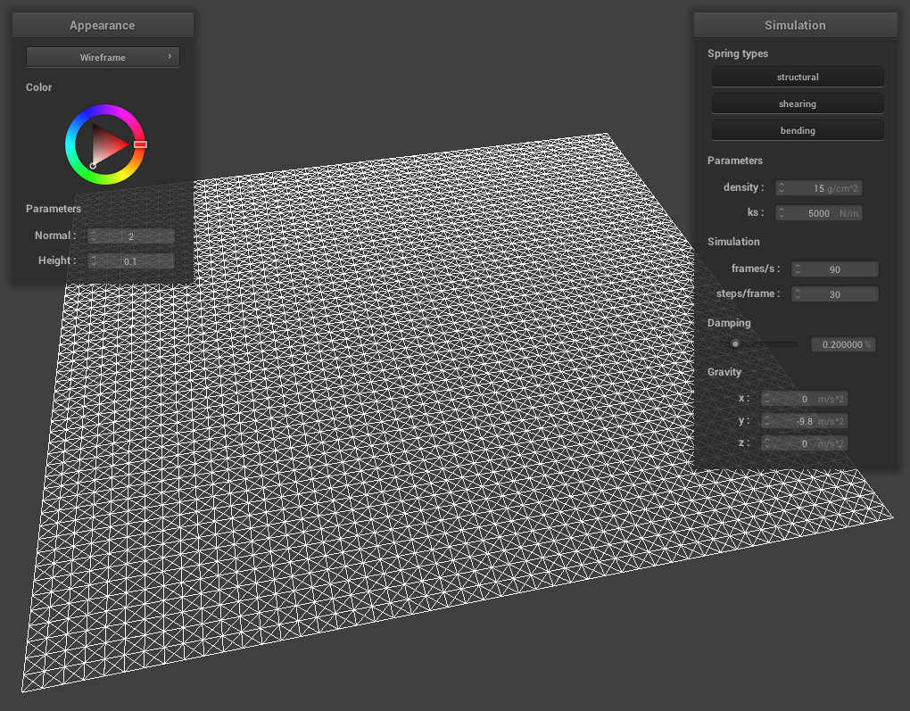

Project Overview
OVERVIEW HERE
Part 1: Masses and Springs
In this part, we implement the foundation of a cloth model by creating a wireframe with point masses and springs. The point masses represent equally distributed points on a cloth surface while the springs help to maintain the relative structure of the points, preventing weird effects such as shearing and unrealistic bending (think of stretching and folding).
Implementation
Implementation of the point-masses were relatively simple. We can break down the grid positions into sets of rows and columns. Specifically, there are num_width_points row positions and num_height_points column positions. The spacing between each row is given by width / (num_width_points - 1) and the spacing between each column is given by height / (num_height_points - 1). Now we simply generate a point-mass for each row and each column in that row by multiplying the row number and column number with the respective calculated spacing for each direction and set it as our point-mass positions in construction. Depending on the orientation of the cloth, the column spacing will determine either the y coordinate or the z coordinate. The row spacing determines the x coordinate regardless of orientation.
Implementation of springs required a bit of thinking as I needed to bound which point-masses I can start a spring from in a given direction. For example, when constructing structural springs to a point-mass that is above the current point-mass, we needed to ensure that the current point-mass is not on the topmost row. The same logic is applied to constructing shearing springs for the diagonal direction (ensuring that the current point-mass is not on the topmost row or edge columns) and constructing bending springs for the point-masses that are two apart (must be at least two away from edge if constructing spring in direction of edge). Overall, I did not encounter any issues with implementation.
Images
Here, we can see four example images rendered using scene/pinned2.json. The first image shows the cloth wireframe fully implemented. The second image shows how the wireframe would look without shearing constraints, allowing the cloth to stretch abnormally. The third image shows only shearing constraints and the fourth image shows all constriants.
|

|

|
|
|
|
|